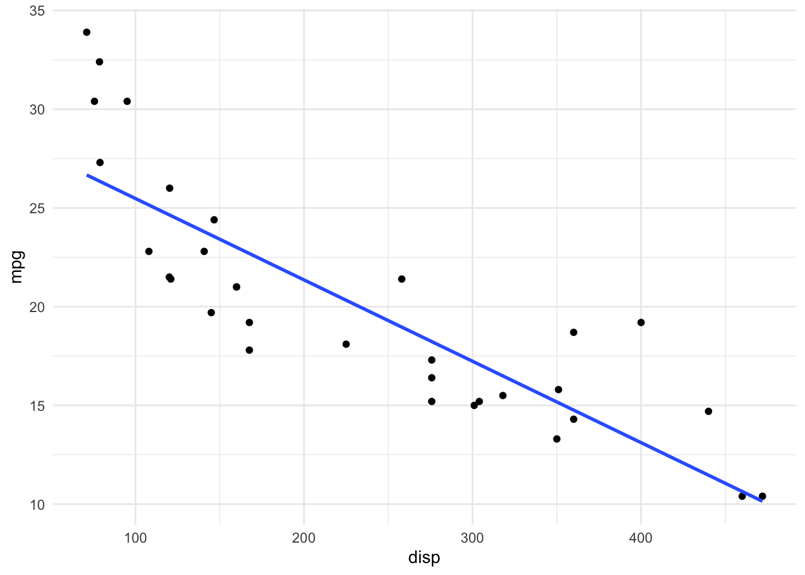

In January 2023 I gave a short talk at the 8th meeting of the Northern Bioinformatics User Group (nBUG for short), an informal network of computational biologists and users or bioinformatics services in the (loosely defined) north of England. If you haven’t heard about us and are in range of a reasonable commute, please come to one of our next meetings (we have three one-day, single-track meetings per year), it’s really nice :-).
My talk wasn’t actually that short, as I ran over time and could not finish it properly. My excuse is that I was juggling a presentation (with slides), a live demo in R Studio and sharing my screen over Teams, over a single projector. This makes it a very good reason to write my short presentation as a blog post.
Who may find this useful?
When I thought about the target audience of the talk, I had in mind postgraduate students, who had already done some work in R and are familiar with the basics of the language (e.g. various data types, loading and transforming data, working in R Studio), but who may not have thought about how to organise their data and scripts, or be aware of really simple tricks that would make their work much more effective and efficient. I didn’t really know whether this was the right pitch, but a few post-talk comments indicated that it was a good one.
He’s not wrong ;-). Photo by Andy Mason.
1. Use projects + here + Rmd/qmd for everything
This advice is number one for a reason - projects will instantly make your work easier, because they will force you to organise your files into a consistent structure. And if you combine it with the package here, you will get extra benefits of making your code simpler and, most importantly, portable.
I usually set up a self-explanatory three-folder structure within any project: folders code, data, and output. You can make it as complicated as you want (and there are packages that will build a default structure for you - see also advice #2 below), but for 70% of my needs, this is sufficient (and 100% for everything I teach R with). Any self-contained idea, no matter how small, should be in a separate project.
A consistent project structure will make your life easier
here() is a simple function that combines strings into paths. The magic bit is that it does so relative to the project location. So you don’t have to remember, or type, that your data is located in /one_folder/another_folder/folder_hell/my_project_folder/data/my_data.csv. If you use projects + here(), it understands where your project is and creates the path relative to it on your hard drive. Like so:
library(here)# Calling the function with no arguments returns what here understands # as the project folder locationhere()
[1] "/Users/jarek/Sites/miserable"
# Calling it with arguments returns path to folders and files relative # to the project folder locationhere("data", "my_data.csv")
It doesn’t matter if you are on a Linux machine and your collaborator on a Windows, as long as you use the same project structure and here(), wherever your code would refer to files in the project folder, it will work on both machines with no changes.
Short rant about file system
The lack of familiarity with the concepts of a filesystem and directory trees is by far the biggest issue for the students who begin working with R. I blame iOS and smartphones to allow people to remain ignorant about the organisation of a computer system, but this issue is particularly compounded by Microsoft’s push to use OneDrive as a main storage space without making it explicit in the user interface.
Students tend to download the Rmd/qmd files and open them directly from the downloads folder. This opens RStudio but confuses here(), which shows the downloads folder as the project directory, making all relative links broken. Moreover, RStudio by default opens on the last used project, so its interface shows the “correct” project name and the file system viewer in the bottom right panel shows the “correct” project location on the hard drive.
The downloaded file needs to be moved to the appropriate place in the project folder (e.g. code) first, followed by openeing the project itself in RStudio, but this is also tricky for some students, who often struggle to answer the question “where is your project folder?” and locate it with File Explorer (also, “what is File Explorer?”).
I imagine that the better functionality would be for RStudio to recognise that it is being opened by an “orphan” Rmd/qmd file and ask the user which project does she want it to be opened in (and then move the file to the project folder and open it from there or create a new project at a location specified by the user).
2. Name things well
There is nothing that I can say about naming things that Jenny Bryan and Danielle Navarro haven’t already said much better. Check their presentations, pick one of the suggested approaches to naming and stick to it. Sticking to it is more important than the exact approach that you choose.
A quick question: can you suggest a better way of naming my project folder in the image in #1 above?
3. Five or six packages that will make your life much easier
Cheating a little, I also wanted to mention several packages with functions that, in my opinion, really make data wrangling and running statistics (pretty much 90% of what my imaginary target audience wants to do) much easier. Here are the best of:
datapasta by Miles McBain. It’s an R Studio addin that lets you easily copy-paste basic data structures into R (e.g. vectors and tables), skipping the formatting and importing steps. Here is an animated GIF from the linked website that explains it:
What datapasta does. Excellent name, too.
One of my most common uses of it is to create dummy data to test various functions or try to understand what’s going on with my code.
janitor by Sam Firke. Probably the most popular of the basic data wrangling packages, with its blockbuster function clean_names(), which standardises messy column names by substituting spaces, normalising type cases and protecting from having names starting with a number or other forbidden symbol. But it also has a function get_dupes() that identifies duplicated rows/variables in the data and a function tabyl() that prettifies tables, including adding rows with totals or formatting the tables as inputs to statistical tests such as χ2.
rstatix by Alboukadel Kassambara. This package is useful for two main reasons: a) it provides wrappers around base r statistical tests making them compatible with pipe (including outputting test results as tibbles) and b) it provides function get_summary_stats() that calculates basic and not-so-basic descriptive statistics, also on groupped data. Here is an example:
library(tidyverse)library(rstatix)library(knitr)# Is there a difference in displacement volume between engines with different number of cylinders?# Note that there are more than two groups of cylinder counts (4, 6 and 8)mtcars %>%t_test(disp ~ cyl) %>%kable()
.y.
group1
group2
n1
n2
statistic
df
p
p.adj
p.adj.signif
disp
4
6
11
7
-4.422972
9.224964
2.0e-03
2.0e-03
**
disp
4
8
11
14
-12.496797
17.796601
0.0e+00
0.0e+00
****
disp
6
8
7
14
-7.081509
17.930865
1.4e-06
2.7e-06
****
If your categorical variable contains more than two groups, t_test will automatically perform all pairwise tests between them.
# Quick summary statistics of engine displacement volumes calculated on data grouped by cylinder countmtcars %>%group_by(cyl) %>%get_summary_stats(disp) %>%kable()
cyl
variable
n
min
max
median
q1
q3
iqr
mad
mean
sd
se
ci
4
disp
11
71.1
146.7
108.0
78.85
120.65
41.80
42.995
105.136
26.872
8.102
18.053
6
disp
7
145.0
258.0
167.6
160.00
196.30
36.30
11.268
183.314
41.562
15.709
38.439
8
disp
14
275.8
472.0
350.5
301.75
390.00
88.25
73.389
353.100
67.771
18.113
39.130
Do check parameter type = for options of what descriptive statistics you want to include in the output of get_summary_stats().
The only (slight) concern about rstatix is its pace of development. Only one issue was patched in the last 1.5 years and at least some of the wrappers do not yet work (e.g. chisq_test() is not pipe-compatible). But other than that rstatix is great.
broom by David Robinson et al. is another of the “prettifying” packages, this time for statistical model outputs. Essentially, it turns output from lm() (and 100+ other models) into a tidy tabular format. It is also able to add extra columns with residuals and predicted values from the model to the original data. It is now part of the tidymodels approach.
library(broom)# Relationship between engine displacement volume and fuel efficiencymtcars %>%ggplot() +aes(x = disp, y = mpg) +geom_point() +geom_smooth(method ="lm", se =FALSE) +theme_minimal()

# Classic output from lmmodel <-lm(mpg ~ disp, data = mtcars)model
Call:
lm(formula = mpg ~ disp, data = mtcars)
Residuals:
Min 1Q Median 3Q Max
-4.8922 -2.2022 -0.9631 1.6272 7.2305
Coefficients:
Estimate Std. Error t value Pr(>|t|)
(Intercept) 29.599855 1.229720 24.070 < 2e-16 ***
disp -0.041215 0.004712 -8.747 9.38e-10 ***
---
Signif. codes: 0 '***' 0.001 '**' 0.01 '*' 0.05 '.' 0.1 ' ' 1
Residual standard error: 3.251 on 30 degrees of freedom
Multiple R-squared: 0.7183, Adjusted R-squared: 0.709
F-statistic: 76.51 on 1 and 30 DF, p-value: 9.38e-10
# And here is the same model presented with broommodel %>% broom::tidy() %>%kable()
term
estimate
std.error
statistic
p.value
(Intercept)
29.5998548
1.2297195
24.070411
0
disp
-0.0412151
0.0047118
-8.747151
0
# And a tidy table with residuals and fitted values (etc.)model %>% broom::augment() %>%head() %>%kable()
.rownames
mpg
disp
.fitted
.resid
.hat
.sigma
.cooksd
.std.resid
Mazda RX4
21.0
160
23.00544
-2.005436
0.0417535
3.285085
0.0086491
-0.6300752
Mazda RX4 Wag
21.0
160
23.00544
-2.005436
0.0417535
3.285085
0.0086491
-0.6300752
Datsun 710
22.8
108
25.14862
-2.348622
0.0628778
3.276208
0.0186786
-0.7461691
Hornet 4 Drive
21.4
258
18.96635
2.433646
0.0328126
3.274958
0.0098254
0.7610697
Hornet Sportabout
18.7
360
14.76241
3.937588
0.0663474
3.219297
0.0558121
1.2533143
Valiant
18.1
225
20.32645
-2.226453
0.0313188
3.280251
0.0078250
-0.6957374
forcats by Hadley Wickham. It is a part of the tidyverse metapackage and is meant to facilitate handling of categorical variables. It is particularly useful for ordering these variables and for grouping them. For example, you can plot only the top three categories in your data (lumping the rest into the “Other” category) with fct_lump() and put the values in decreasing order by median of another variable with fct_reorder().
diamonds %>%sample_frac(0.1) %>%mutate(cut =fct_lump(cut, 3), # Group categories outside of top 3 into "Other"cut =fct_reorder(cut, price, median, .desc =TRUE)) %>%# Reorder categories of diamond cut by median of their price, in decreasing orderggplot(aes(x = cut, y = price)) +geom_boxplot(outliers =FALSE) +theme_minimal()
4. Know your interface
Spend some time on learning the interface of RStudio and force yourself to use its features until they become second nature. In the simplest case, pick a good colour theme in settings, add coloured lines to indicate tabs (and matching colours for brackets), and a good typeface. Uncheck the default options to save history and environment - and make sure you can reproduce your entire analysis from your Rmd/qmd document.
Then learn the basic keyboard shortcuts (Option-Shift-K shows all shortcuts, for Windows just replace Option with Alt and Command with Windows key):
insert new chunk (Control-Option-I)
insert pipe symbol (Option–)
run current line/run current chunk (Control-Enter/Control-Shift-Enter)
switch between panes and expand them to full screen (Control-Shift-1 for the source panel, etc.. Press again to expand.)
move lines of code up/down (Option-↑ or ↓)
Finally, learn to use these:
multi-line cursors (Control-Option-↑ or ↓)
rename-in-scope (Control-Option-Shift-M)
multi-file find-and-replace (Shift-Command-F): you need to find stuff first, then toggle Replace switch
Finally, I suggested the following two ideas for further learning and improvement of R workflows:
Version control. Duh. You should be using it even if you work alone, because it will help you familiarise yourself with it and provide a history of the changes to your code. If you couple it with an online repository (e.g. GitHub, GitLab, Codeberg) it will provide a backup of sorts and, obviously, allow collaborating with others. Happy Git with R remains the best one-stop resource of how to get started with Git and version control through RStudio.
purrr package and its list-column → nest() → map() approach to iteration. I have become a big fan of it and now almost always shape my data to be compatible with this approach. purrr is a collection of functions that standardise the behaviour or base r *apply() family of functions. They work very well in combination with list-columns, when dataframes (and other objects) are “stored” inside cells of other dataframes. For example, here I split the mtcars dataframe into three nested dataframes, one for each cylinder count, and then apply a custom function (a standard error of the displacement) to each of the nested dataframes, putting its output in another column of the main dataframe. Clear as mud? Well, here it goes:
# Step 1: nest your datamtcars %>%group_by(cyl) %>%nest() # A list-column with a default name data is created that contains an original data set split by the cyl variable
# Step 2: create a function (if needed) to operate on each nested piece of data# A custom function to calculate standard error from the disp column of an input dataframemySE <-function(df){sd(df$disp)/sqrt(length(df$disp)) # I know this is not optimal but bear with me}
# Step 3: map this function over each nested piece of datamtcars %>%group_by(cyl) %>%nest() %>%mutate(disp_se =map(data, mySE))
# By default the output of map() is a list, but there are variants of map() dedicated to particular types of data:# for example, if the output is numeric, map_dbl will output the result of your function as a numbermtcars %>%group_by(cyl) %>%nest() %>%mutate(disp_se =map_dbl(data, mySE))
Map can map your function over every element of the data list-column. With the same approach, you can make a plot of each of these elements and put each plot within a new list-column, thus keeping your data, calculations and visualisations of your data within a single dataframe-like object. I really like this and would recommend anyone to familiarise themselves with it.
# A custom plotting functionmyPlot <-function(df){ df %>%ggplot() +aes(x = disp, y = mpg) +geom_point() +geom_smooth(method ="lm", se =FALSE) +theme_minimal()}# The new function is applied over each element of a list-column and output is created in another list-columnmtcars %>%group_by(cyl) %>%nest() %>%mutate(disp_se =map_dbl(data, mySE),my_plots =map(data, myPlot))